Über den Bereich "FAKT-Parameter - Belege - Artikel" können allgemeine Einstellungen für die Verwendung von Artikeln in der Belegerfassung der WinLine FAKT vorgenommen werden.
Hinweis
Standardmäßig wird das Fenster in einem "Lesemodus" geöffnet, d.h. es können die bestehenden Einstellungen kontrolliert, Änderungen allerdings nicht durchgeführt werden. Hierfür muss zunächst mit Hilfe des Buttons "Bearbeiten" der "Bearbeitungsmodus" aktiviert werden. Alternativ kann diese Aktivierung auch über das Kontextmenü der rechten Maustaste (Funktion "Applikation xxx bearbeiten") erfolgen.
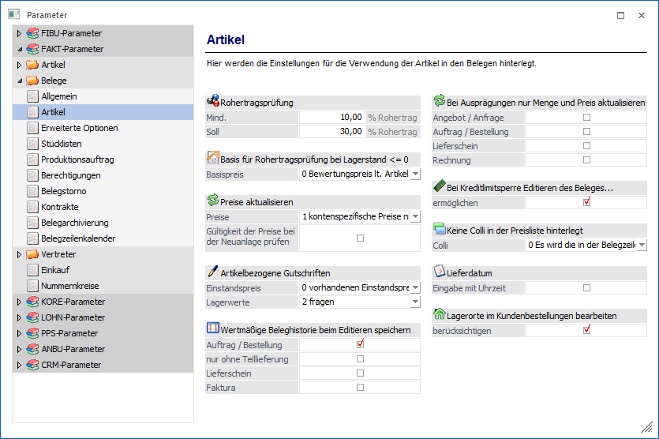
Rohertragsprüfung
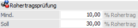
Ø Mind. / Soll
Es besteht die Möglichkeit einen "Mindest Rohertrag" und einen "Soll Rohertrag" zu definieren. Wird ein "Mindest Rohertrag" hinterlegt, dann wird, abhängig von der Schlüsselung in der Artikelgruppe (Spalte "Rohertragsprüfung"), eine Aktion durchgeführt (entweder wird der Benutzer gewarnt oder die Eingabe gesperrt).
Wird auch ein "Soll Rohertrag" definiert, dann erfolgt bei Unterschreitung dieses Rohertrags ein entsprechender Hinweis. Die Kombination beider Eingaben führt zu folgendem Ergebnis:
Beispiel
Mindest Rohertrag: 10 % (bei Unterschreitung ist "2 - Sperre" definiert)
Soll Rohertrag: 20 %
ü Verkauf eines Artikels mit einem
Rohertrag von 22 %
es erfolgt keine Aktion
ü Verkauf eines Artikels mit einem
DB von 19 %
es erfolgt eine Warnung
ü Verkauf eines Artikels mit einem
DB von 9 %
die Erfassungszeile kann nicht gespeichert werden
Achtung
Die gesamte Rohertragsprüfung ist grundsätzlich abhängig vom verwendeten Vertreter (WinLine FAKT - Stammdaten - Vertreterstammdaten - Vertreterstamm - Register "Erweitert" - Option "Rohertragsprüfung -> keine / individuell / allgemein"). Die Einstellung aus den Applikationsparametern "FAKT-Parameter - Vertreter - Vertreterabrechnung"abzügl. der Rabatte und Skonto werden bei der Rohertragsprüfung (Einstellung bei der Artikelgruppe) mitberücksichtigt.
Hinweis
Nähere Informationen hierzu entnehmen Sie bitte dem WinLine FAKT-Handbuch.
Basis für die Rohertragsprüfung bei Lagerstand <= 0
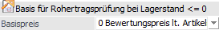
Ø Basispreis
An dieser Stelle kann entschieden werden, welcher Basispreis für die Rohertragsprüfung herangezogen werden soll, wenn der Lagerstand des Artikels kleiner oder gleich 0 lautet. Folgende Einstellungen stehen dabei zur Verfügung:
ü 0 - Bewertungspreis lt.
Artikelstamm
Als Preisbasis wird der Bewertungspreis lt.
Artikelstammeinstellung herangezogen (WinLine FAKT - Stammdaten - Artikelstamm -
Artikel - Register "Lager" - Unterregister "Einstellungen" - Option "Basis für
Rohertrag").
ü 1 - Einstandspreis
Als
Preisbasis wird der Einstandspreis des Artikels herangezogen.
ü 2- Allg. Einkaufspreis
Als
Preisbasis wird der allgemeine Einkaufspreis des Artikels herangezogen.
ü 3 - letzter Einkaufspreis
Als
Preisbasis wird der letzte Einkaufspreis des Artikels herangezogen.
ü 4 - niedrigster
Einkaufspreis
Als Preisbasis wird der niedrigste Einkaufspreis des Artikels
herangezogen.
Hinweis
Die hier hinterlegte Einstellung wird nur bei Artikel mit einem Lagerstand von kleiner oder gleich 0 herangezogen. Sollte der Lagerstand größer 0 lauten wird der Basispreis aufgrund der Einstellung im Artikelstamm ermittelt (WinLine FAKT - Stammdaten - Artikelstamm - Artikel - Register "Lager" - Unterregister "Einstellungen" - Option "Basis für Rohertrag").
Preise aktualisieren
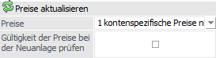
Ø Preise
In der Belegerfassung besteht die Möglichkeit, geänderte Preise in der Preisliste speichern zu lassen. Welche Preise gespeichert werden sollen, kann hier in den Fakt-Parametern vorbelegt werden:
ü 1 - kontenspezifische Preise nie
ändern
Wenn diese Option aktiviert wird, werden geänderte kontenspezifische
Preise nicht in die Preisliste zurück geschrieben.
ü 2 - kontenspezifische Preise immer
ändern
Wenn diese Option aktiviert wird, werden kontenspezifische Preise, die
im Beleg verwendet und geändert werden, in die Preislisten zurück
geschrieben.
ü 3 - alle Preise als
kontenspezifische Preise anlegen (Preis und Rabatt)
Wenn diese Option
aktiviert wird, werden alle geänderten Preise als kontenspezifische Preise mit
dem Preiskennzeichen "0 Preis und Rabatt" angelegt. Wenn es für den Artikel noch
keinen kontenspezifischen Preis gibt, wird ein Preislisteneintrag angelegt und
der Preis aus dem Beleg übernommen. Wenn ein Rabatt eingegeben bzw. geändert
wird, wird in der Preisliste das Kennzeichen "Rabatt in %" gespeichert. Wenn der
Rabatt nicht geändert wird, wird in der Preisliste das Kennzeichen "Rabattspalte
aus Artikelstamm" gespeichert. Wenn es für den Artikel schon einen
kontenspezifischen Preis gibt, wird dieser geändert, falls er im Beleg verwendet
wird.
ü 4 - alle Preise als allgemeine
Preise anlegen (Preis und Rabatt)
Wenn diese Option aktiviert wird, werden
alle vorhandenen Preise als allgemeine Preise mit dem Preiskennzeichen "0 Preis
und Rabatt" angelegt. Wenn es für den Artikel noch keinen allgemeinen Preis
gibt, wird ein Preislisteneintrag angelegt und der Preis aus dem Beleg
übernommen. Wenn ein Rabatt eingegeben bzw. geändert wird, wird in der
Preisliste das Kennzeichen "Rabatt in %" gespeichert. Wenn der Rabatt nicht
geändert wird, wird in der Preisliste das Flag "Rabattspalte aus Artikelstamm"
gespeichert. Wenn es für den Artikel schon einen allgemeinen Preis gibt, wird
dieser geändert, falls er im Beleg verwendet wird.
ü 5 - alle Preise als
gruppenspezifische Preise anlegen (Preis und Rabatt)
Mit dieser Option werden
alle geänderten Preise als gruppenspezifische Preise mit dem Preiskennzeichen "0
Preis und Rabatt" angelegt. Wenn es für den Artikel noch keinen
gruppenspezifischen Preis der entsprechenden Gruppe gibt, wird ein
Preislisteneintrag angelegt und der Preis aus dem Beleg übernommen. Wenn ein
Rabatt eingegeben bzw. geändert wird, wird in der Preisliste das Kennzeichen
"Rabatt in %" gespeichert. Wenn der Rabatt nicht geändert wird, wird in der
Preisliste das Kennzeichen "Rabattspalte aus Artikelstamm" gespeichert. Wenn es
für den Artikel schon einen gruppenspezifischen Preis der entsprechenden Gruppe
gibt, wird dieser geändert, falls er im Beleg verwendet wird.
ü 6 - alle Preise als
kontenspezifischen Preise anlegen (nur Preis)
Wird diese Option verwendet, so
werden angegebenen Preise als kontenspezifische Preise mit dem Preiskennzeichen
"1 Preis" angelegt. D.h. wenn es für den Artikel noch keinen kontenspezifischen
Preis gibt wird ein Preislisteneintrag angelegt und der Preis aus dem Beleg
übernommen. Wenn es für den Artikel schon einen kontenspezifischen Preis gibt,
wird dieser geändert.
ü 7 - alle Preise als allgemeinen
Preise anlegen (nur Preis)
Bei Verwendung dieser Option werden alle
geänderten Preise als kontenspezifische Preise mit dem Preiskennzeichen "1
Preis" angelegt. D.h. wenn es für den Artikel noch keinen allgemeinen Preis
gibt, wird ein Preislisteneintrag angelegt und der Preis aus dem Beleg
übernommen. Wenn es für den Artikel schon einen allgemeinen Preis gibt, wird
dieser geändert, falls er im Beleg verwendet wird.
ü 8 - alle Preise als
gruppenspezifische Preise anlegen (nur Preis)
Wenn diese Option gewählt wird,
werden alle geänderten Preise als gruppenspezifische Preise mit dem
Preiskennzeichen "1 Preis" angelegt. D.h. wenn es für den Artikel noch keinen
gruppenspezifischen Preis der entsprechenden Gruppe gibt, wird ein
Preislisteneintrag angelegt und der Preis aus dem Beleg übernommen. Wenn es für
den Artikel schon einen gruppenspezifischen Preis der entsprechenden Gruppe
gibt, wird dieser geändert, falls er im Beleg verwendet wird.
Hinweis
Diese Einstellungen können in der Belegart und / oder in der Belegerfassung übersteuert werden.
Ø Gültigkeit der Preise bei der Neuanlage prüfen
Durch Aktivierung dieser Option wird bei einer Neuanlage eines kundenspezifischen Preises im Zuge des Belegerfassens (Spalte "ändern") geprüft, ob ein gültiger Preis vorhanden ist. Ist dies nicht der Fall, so wird ein neuer Preiseintrag erzeugt.
Artikelbezogene Gutschriften
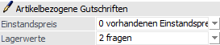
Für artikelbezogene Gutschriften können folgende Einstellungen betreffend dem Einstandspreis und der Lagerwerte getroffen werden:
Ø Einstandspreis
ü 0 - vorhandenen Einstandspreis
verwenden
Bei Eingabe einer negativen Menge im Belegerfassen wird der
Einstandspreis des Artikels verwendet.
ü 1 - Einstandspreis auf 0
setzen
Bei Eingabe einer negativen Menge im Belegerfassen wird der
Einstandspreis des Artikels in der Belegzeile auf 0 gesetzt (ergibt einen
negativen Rohertrag in Höhe des VK-Preises).
ü 2 - Einstandspreis auf
Verkaufspreis setzen
Bei Eingabe einer negativen Menge im Belegerfassen wird
der Einstandspreis des Artikels in der Belegzeile auf den verwendeten VK-Preis,
umgerechnet in Netto/Landeswährung und in VK-Colli, gesetzt (ergibt eine
Rohertragskorrektur von 0).
Ø Lagerwerte
ü 0 - immer verändern
Bei Eingabe
einer negativen Menge im Belegerfassen werden Lagerstand und Lagerwert - ohne
zusätzliche Abfrage - immer verändert.
ü 1 - nie verändern
Bei Eingabe
einer negativen Menge im Belegerfassen werden Lagerstand und Lagerwert nie
verändert.
ü 2 - fragen
Bei Eingabe einer
negativen Menge im Belegerfassen erfolgt eine Rückfrage, ob Lagerstand und -wert
verändert werden sollen, und zwar eine eigene Rückfrage für jede Ausprägung und
den Hauptartikel.
ü 3 - nur bei Hauptartikel
fragen
Bei Eingabe einer negativen Menge im Belegerfassen erfolgt eine
Rückfrage, ob Lagerstand und -wert verändert werden sollen, und zwar nur eine
Rückfrage für den Hauptartikel, die auch gleichzeitig für alle Ausprägungen des
Hauptartikels gilt.
Wertmäßige Beleghistorie beim Editieren speichern
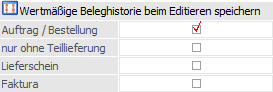
Ø Beleghistorie
Bei Änderungen von bereits gedruckten Aufträgen, Lieferscheinen oder Fakturen werden die ursprünglichen Angaben "überschrieben". Mit folgenden Optionen werden diese Änderungen in der Datenbank gemerkt und in der Auswertung "Tagesjournal" entsprechend dargestellt (nähere Informationen entnehmen Sie bitte dem Kapitel "Tagesjournal"):
ü Auftrag / Bestellung
Wenn diese
Checkbox aktiviert ist, wird beim ersten Druck eines Auftrags, beim Editieren
eines Auftrags und beim Storno des Beleges eine Zeile für jede Änderung
vermerkt.
ü nur ohne Teillieferung
Wird
diese Checkbox aktiviert so werden Änderungen nur dann geschrieben, wenn keine
Teillieferung erfolgt ist. Wenn diese Checkbox nicht aktiviert ist, werden die
Änderungen immer geschrieben.
ü Lieferschein
Durch Aktivieren
dieser Option wird beim ersten Druck eines Lieferscheins, beim Editieren eines
Lieferscheins und beim Storno des Beleges eine Zeile für jede Änderung
vermerkt.
ü Faktura
Ist diese Checkbox
aktiviert so wird beim ersten Druck einer Rechnung, beim Editieren einer
Rechnung und beim Storno des Beleges eine Zeile für jede Änderung
geschrieben.
Bei Ausprägungen nur Menge und Preis aktualisieren
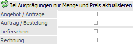
Ø Aktualisierung
Wenn in einem Beleg, bei einem bereits aufgeteilten Hauptartikel, nochmals das Fenster "Ausprägungen erfassen" geöffnet wird und anschließend eine Abspeicherung per Button "OK" bzw. der Taste F5 erfolgt, dann werden alle Ausprägungen gelöscht und neu eingefügt. In solch einem Fall werden die Artikeldaten der Ausprägungen nicht aus dem Artikelstamm neu geladen, so dass z.B. Einstellungen wie der Colli, das Lieferdatum oder das Erlöskonto automatisch vom Hauptartikel übernommen werden.
Ist dieses Programmverhalten nicht gewünscht, so kann an dieser Stelle (pro Belegstufe) das Löschen und Einfügen durch ein Aktualisieren ersetzt werden. Hierdurch wird nur noch die Menge und die Preisdaten aus dem Fenster "Ausprägungen erfassen" in die Belegmitte übernommen.
Bei Kreditlimitsperre Editieren des Beleges
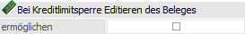
Ø (Bei Kreditlimitsperre Editieren des Beleges) ermöglichen
Wenn diese Option aktiviert ist, dann kann trotz einer aktiven Kreditlimitsperre in der Belegerfassung in das Register "Mitte" gewechselt und dort die Mengen der Artikel editieren werden. Zusätzlich ist es möglich zwischen den einzelnen Belegzeilen hin- und herzuwechseln.
Hinweis
Bei jedem Zeilenwechsel bzw. auch beim Wechsel zwischen den einzelnen Registern wird trotz der Editiermöglichkeit immer eine Warnung ausgegeben, dass der Kunde gesperrt ist.
Keine Colli in der Preisliste hinterlegt
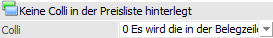
Ø Colli
An dieser Stelle kann definiert werden, wie der Colli in der Belegerfassung bei einer erneuten Preisfindung geupdatet werden soll, wenn in dem entsprechenden Preislisteneintrag kein Colli hinterlegt wurde.
ü 0 - Es wird die in der Belegzeile
vorhandene Colli beibehalten
Wenn in dem Preislisteneintrag, welcher aufgrund
der Preishierarchie gefunden wurde, kein Colli hinterlegt ist, so bleibt der
Colli in der Belegerfassung erhalten
ü 1 - Es wird die Colli aus dem
Stamm verwendet
Wenn in dem Preislisteneintrag, welcher aufgrund der
Preishierarchie gefunden wurde, kein Colli hinterlegt ist, so wird der Colli aus
dem Artikelstamm (Register "Preise", Unterregister "Konten") in die Spalte
"Colli" der Belegzeile gesetzt.
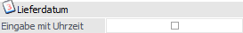
Ø Eingabe mit Uhrzeit
Wird diese Option aktiviert, kann in den Feldern "Lieferdatum" und "best. Lieferdatum" in der Belegmitte eine Uhrzeit miterfasst werden. Die Uhrzeit wird ausschließlich in der Belegmittetabelle gespeichert und kann für Auswertungen dieser Tabelle (z. B. im Belegzeilenkalender) verwendet werden. Bei allen anderen Tabellen, bei denen ein Datum mit dem Lieferdatum der T026 belegt wird, wird die Uhrzeit abgeschnitten:
ü T014 (Dispotabelle)
ü T083 (Artikeljournal)
ü T039 (Statistik)
ü T337 (Lagerortjournal)
ü T324 (Produktionsjournal)
ü T042 (Vertreterjournal)
Hinweis 1
Bei der Änderung des Lieferdatums…
ü im Lieferantenbestellungen bearbeiten…
ü in der Sperrliste…
ü im Leitstand/Auftragsinfo oder…
ü im Leitstand/Kundenaufträge - Lieferdatum ändern…
kann keine Uhrzeit eingegeben werden, d.h. hier wird die Uhrzeit in der T026 überschrieben!
Hinweis 2
Wenn in den FAKT-Parametern die Option "Lieferdatum mit Uhrzeit" aktiviert ist und ein bestätigtes Lieferdatum mit Uhrzeit eingetragen ist, so wird das Datum im Belegerfassen in der Belegmitte, in der Artikelbedarfsvorschau und in der Sperrliste in der unteren Bildschirmtabelle angezeigt.
Ist die Option "Lieferdatum mit Uhrzeit" in den FAKT-Parametern nicht aktiviert und wird in einem Einkaufsbeleg ein bestätigtes Lieferdatum mit Uhrzeit eingetragen, so wird dieses im Belegerfassen in der Belegmitte mit der Checkbox "Sofort" und in der Artikelbedarfsvorschau und in der Sperrliste in der unteren Bildschirmtabelle mit dem Text "Sofortlieferung" angezeigt.
Lagerorte im Kundenbestellungen bearbeiten
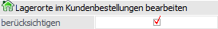
Ø (Lagerorte im Kundenbestellungen bearbeiten) berücksichtigen
Mit Hilfe dieser Option kann definiert werden, wie mit Lagerortartikeln im Programm "Kundenbestellungen bearbeiten" verfahren werden soll.
ü Option ist aktiviert
(Standard)
Bei Artikel mit Lagerorten stehen alle Lagerortfunktionalitäten
(z.B. die Anzeige und Erfassung von Orten) zur Verfügung.
ü Option ist deaktiviert
Bei
Deaktivierung der Option werden Artikel mit Lagerorten im "Kundenbestellungen
bearbeiten" wie "normale" Artikel berücksichtigt:
ü Bei der Anzeige der auszuliefernden Artikel erfolgt keine automatische Aufteilung bzw. Zuweisung auf Lagerorte.
ü Die Spalte "Lagerort" steht nicht zur Verfügung.
ü Bei Veränderung der Menge erfolgt keine Prüfung gegen die Lagerortmenge bzw. den Lagerortbestand und Fenster "Lagerorte - Erfassen" wird nicht geöffnet.
ü Der Button "Lagerorte automatisch aufteilen" hat keine Funktion.
Achtung
In der Regel muss eine Aufteilung bzw. Zuweisung der Lagerorte zum Zeitpunkt des Lieferscheindrucks vorliegen. D.h. wird mit diesem Modus gearbeitet, so muss zwischen "Kundenbestellung bearbeiten" und "Lieferscheindruck" dieses, z.B. via Batchbeleg-Import, anderweitig vorgenommen werden.